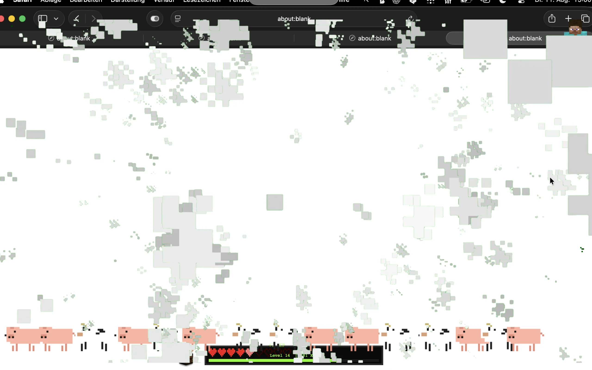
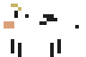
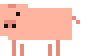
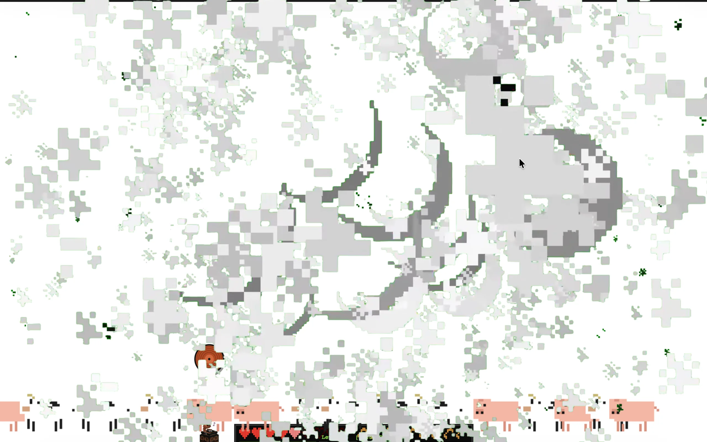
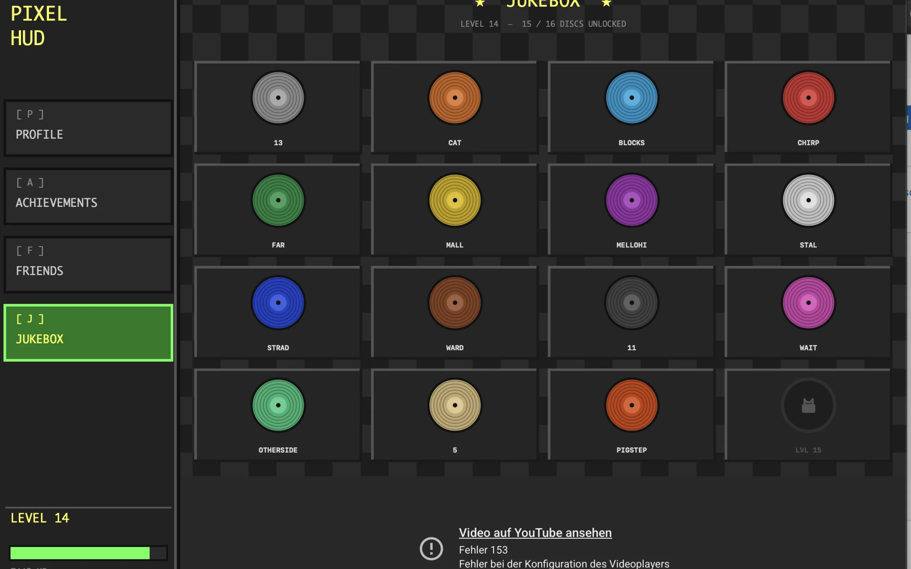
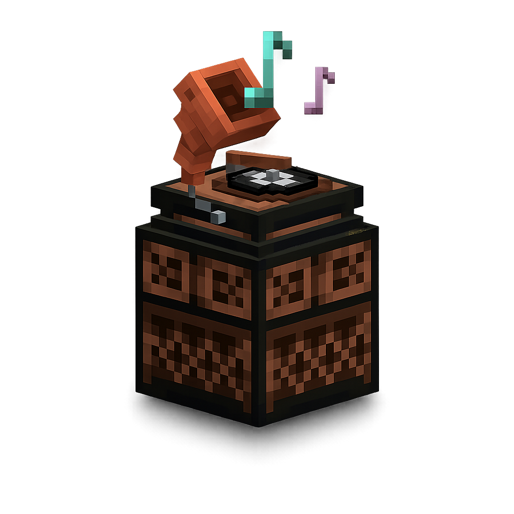
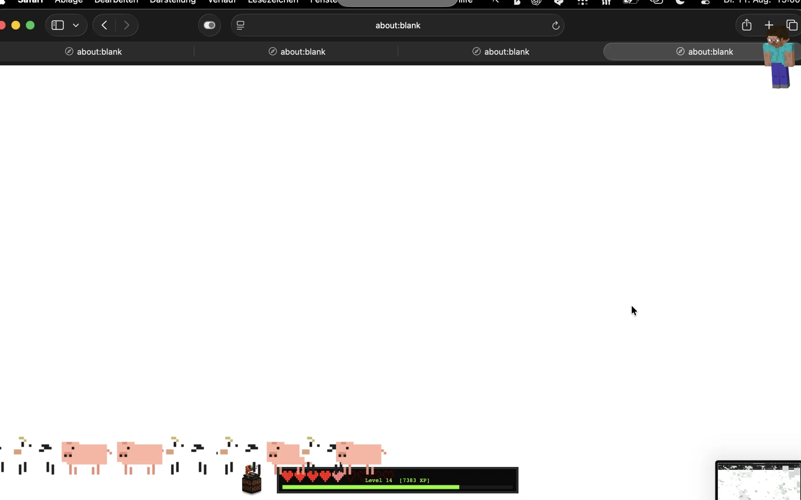
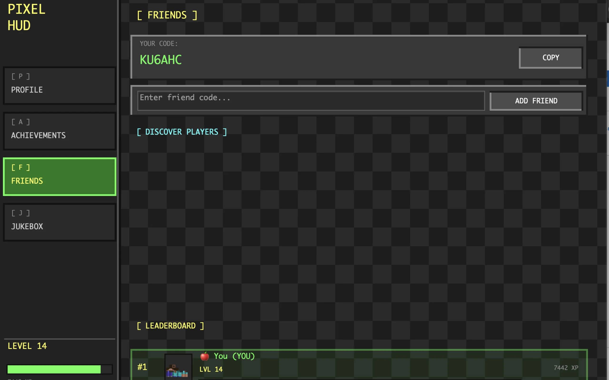

⌘+W
Close a tabTNT explosion.
Close a browser tab and the real full-screen PixelHUD blast takes over for a split second.
Your workday just found its soundtrack.
PixelHUD turns the ordinary signals of your day—battery, typing, focus and finished tasks—into the hearts, XP and tiny victories you never really grew out of.

REAL PIXELHUD CAPTUREGrowing up doesn't mean logging off.
Somewhere between calendars, documents and 46 browser tabs, the delight disappeared. PixelHUD brings it back—not by turning work into another productivity system, but by making progress visible, playful and yours again.
The shortcuts you already use. Now with consequences.
Close a browser tab and the real full-screen PixelHUD blast takes over for a split second.
The exact animated cow from PixelHUD walks across the bottom of your screen—with its familiar sound.

Paste something and the exact PixelHUD pig trots through your desktop.

The exact skin and 3D construction from PixelHUD turn Steve into a tiny desktop companion. Move your cursor and try it.

The app's pixel creeper approaches. Steve spots it—and starts nervously shaking his head.
The heart containers in the app are your battery—drawn here from the exact same 7×6 pixel grid and colors as PixelHUD itself.
Every keystroke and click earns XP. New levels unlock music discs for your jukebox—bringing that Minecraft nostalgia back into your workday.


The drumsticks slowly empty through your day. When the bar gets low, it is time to stop grinding and eat something real.
PixelHUD's landscape lives behind your windows—sun, clouds, hills, trees and wandering creatures shifting from daylight into night.

Your friends tab shows the people in your PixelHUD world, their level and XP—with live activity used to show who is around now.

A simple slider in PixelHUD's menu scales Steve up or down. Keep him subtle—or give him the screen presence he thinks he deserves.
Activity is processed locally. Keystrokes aren't recorded, stored or transmitted.
Apple Silicon and Intel Macs, macOS 13 or newer. No game installation required.
Designed as a lightweight desktop companion—not another app demanding your attention.
Your next workday can feel different.
Bring a little wonder back to the desktop you look at every day.
Download PixelHUD for Mac ↓7-day free trial · Then $4.99 once · No subscriptionBefore you enter.
Neither. It is an independent desktop utility that adds a pixel-art HUD, playful effects and progress systems to your everyday Mac.
No. PixelHUD runs on its own and does not connect to or modify any game.
No. It only detects activity to award XP. Keystrokes are not recorded, stored or transmitted.
Yes. Assign local audio files to your jukebox discs by drag and drop or the file picker. They stay on your device.
PixelHUD supports Apple Silicon and Intel Macs running macOS 13 or newer.